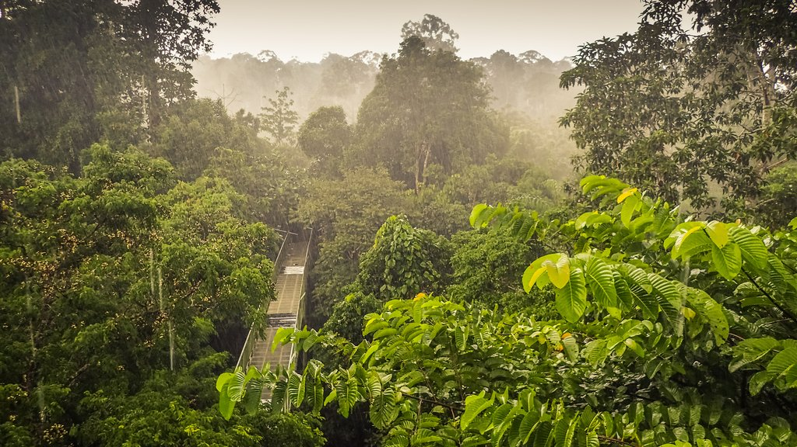

Welcome to the Explorer
Sarawak, on the island of Borneo, is home to one of the richest plant communities on Earth. Its lowland rainforests, peat swamps, limestone hills and mountain slopes shelter thousands of flowering plants, many of which are found nowhere else in the world. This explorer section organises a small selection of these plants so that you can learn about them step by step, moving from the broad picture to the fine detail.
The collection on this website contains four plant families. Each family contains two genera, and each genus contains two species, giving a total of sixteen native plants. The information is divided into three pages, and you can visit them in any order, although following the sequence of families, genera and species is the easiest way to understand how the groups fit together.

Habitats of Sarawak
Sarawak's plants are shaped by the places where they grow. Within a small area, the land changes from flat coastal swamps to steep limestone cliffs and cool mountain ridges. Each of these habitats has its own mix of light, water and soil, so each supports a different group of plants. Learning where a plant lives helps explain why it looks the way it does.
The habitats below are listed roughly from the coast inland and upward:
- Lowland rainforest. This is the most widespread habitat and holds the greatest variety of plants. The tall canopy filters the sunlight, so the forest floor is shady and humid. Fan palms, rattans and many fruit trees, including wild relatives of rambutan, grow here.
- Peat swamp forest. In low-lying areas near the coast, waterlogged soil builds up thick layers of partly decayed plant material. The water is acidic, so only specially adapted plants can survive.
- Limestone hills. Steep, rocky outcrops have thin soil and drain quickly. Some of Sarawak's rarest slipper orchids cling to these cliffs and are found nowhere else.
- Forest gaps and river edges. When a tree falls or a river shifts its course, sunlight reaches the ground. Fast-growing plants, such as many figs, move in quickly and attract birds, bats and monkeys.
- Mountain forest. At higher elevations the air is cooler and mist is frequent. The trees are shorter and covered in moss, and many plants here grow in very small areas.
Why habitat matters for this collection
The sixteen plants on this website come from several of these habitats. An orchid that grows on a limestone cliff cannot simply move to another forest, so if its home is damaged it may be lost completely. Rattans and fruit trees depend on healthy lowland forest, and figs depend on the animals that spread their seeds.
The Collection at a Glance
The table below shows how the sixteen plants are organised, from family down to species.
| Family | Genera | Species |
|---|---|---|
| Sapindaceae | Nephelium, Lepisanthes | N. lappaceum, N. ramboutan-ake, L. fruticosa, L. alata |
| Orchidaceae | Paphiopedilum, Phalaenopsis | P. stonei, P. sanderianum, P. gigantea, P. maculata |
| Arecaceae | Licuala, Calamus | L. orbicularis, L. bidentata, C. caesius, C. manan |
| Moraceae | Artocarpus, Ficus | A. odoratissimus, A. tamaran, F. benjamina, F. variegata |
The Three Categories
- Families
- The broadest group. Plants in the same family share basic features of their flowers, fruits and growth form.
- Genera
- A smaller group inside a family. Plants in one genus are close relatives and look alike in many ways.
- Species
- The most specific level. A species is a single, distinct kind of plant with its own scientific name.